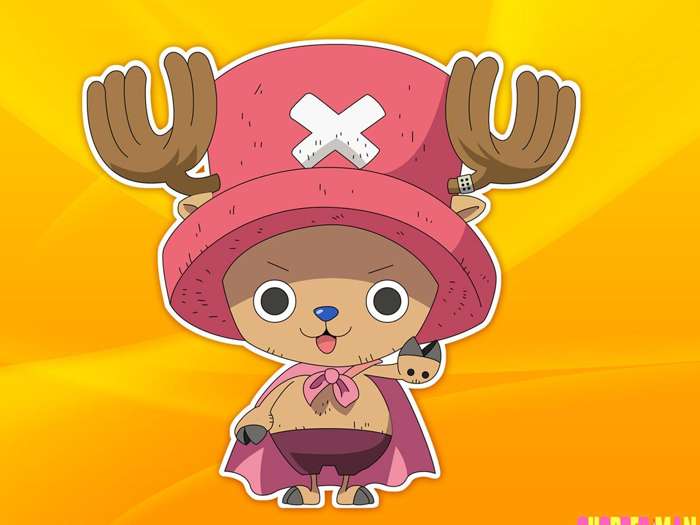
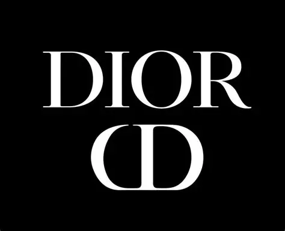
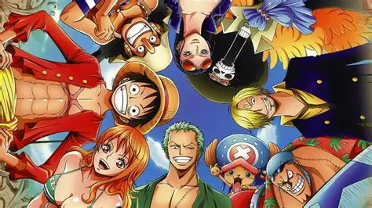

Listas de Definicion
Actua como una lista de terminos de
palabras y su significado.
- Tony Tony Chopper:
- Tony Tony Chopper es un personaje del manga y anime One Piece,
creado por Eiichiro Oda. Es el médico de los Piratas del Sombrero de Paja,
la tripulación del protagonista Monkey D. Luffy.

- Marca Dior:
- Dior (nombre completo: Christian Dior S.A.) es una casa de moda de lujo francesa,
reconocida a nivel mundial por sus diseños elegantes, sofisticados y exclusivos.
Fue fundada en 1946 por el diseñador Christian Dior.

- IOS Iphone:
- iOS es el sistema operativo que utilizan los iPhone (y también iPod Touch y en parte el iPad,
aunque este ahora usa una versión separada llamada iPadOS).
Es desarrollado por Apple Inc. y es exclusivo para sus dispositivos móviles,
lo que significa que solo funciona en productos Apple.
- One piece:
- One Piece es una serie de aventuras sobre Monkey D. Luffy,
joven que sueña con convertirse en el Rey de los Piratas. Para lograrlo, reúne una tripulación de amigos únicos y
ja por un mundo lleno de islas, monstruos, poderes sobrenaturales y enemigos peligrosos.Su objetivo: encontrar el legendario
oro llamado One Piece, escondido por el anterior Rey de los Piratas, Gol D. Roger, en la isla más lejana del mundo, Laugh Tale.

- Halas de Sangre, Hierro y Onix
- Es una serie literaria en el género de fantasía romántica juvenil, que sigue la historia de Violet Sorrengail,
joven que ingresa a una escuela militar en un mundo donde los dragones y la magia juegan roles esenciales.
título corresponde a un volumen de la saga Empíreo: Alas de Sangre:Primer libro, presenta a Violet en su primer año
en la Escuela de Guerra de Basgiath donde se convierte en jinete de dragón. Alas de Hierro:Segundo libro,
continúa la aventura mientras Violet y sus aliados luchan contra portadores de magia maligna. Alas de Ónix (Onyx Storm):Tercera entrega,
publicada el 21 de enero de 2025, promete un giro más político, nuevas aventuras, viejos enemigos… ¡y más dragones!